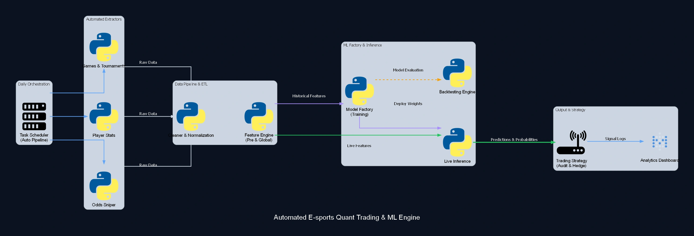

Predictive Pipeline in Competitive and ML Engine
End-to-end algorithmic engine orchestrated for quantitative trading, with a predictive model validated above 68% accuracy across multiple seasons. The architecture includes massive daily web scraping, rigorous normalization, and a Feature Engine optimized to feed the 'Model Factory' with 42 structured variables. The system autonomously manages retraining (backtesting) and live inference, sending high-precision signals for hedge strategies and dashboards.

Case Study
Problem
Lack of automated ingestion and real-time processing for volatile predictive decision-making.
Solution
Data pipeline orchestration with an isolated Feature Engine feeding live inference.
Impact
Sustained algorithmic predictive accuracy of >68% across multiple seasons without manual intervention.
Need a predictive engine fed by an isolated feature-engineering layer? Let's design that architecture for your context.
Discuss your case